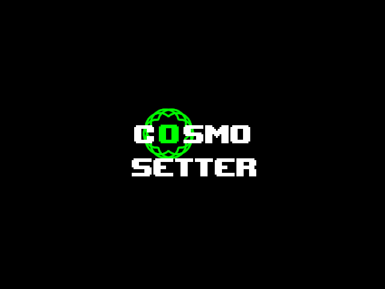

Home
Home The Team
The Team Archives
Archives Cosmo Setter
Cosmo Setter Uproots
Uproots


Productive Radiation's Blog
News Roundup
on 07 June 2022 by ocfrom
Quite a few things happened during this week, so here's the scoop!
AN ENTIRE WEBSITE REDESIGN; NOW FINISHED. ABSOLUTELY BEAUTIFUL.

I've finally finished the website redesign. It took like, two days. I noticed the website did really look too hot in smaller dimensions, so that's really the main reason I made the update (see picture below).

In the worst cases, it could even look like this...
Hopefully, this redesign will help out those on their mobile devices or with smaller screens!

(We also now have a TUMBLR BLOG run and set up by Jay. Thank you!)
Uproots added to the website

I (ocfrom) added a Uproots section at the request of Jay. Uproots is a surreal RPG being developed by Jay (and some other people I think including me). It has a really cool soundtrack (seriously, listen to this!) and I think it'll be a great idea to play it when it comes out.
Thanks for reading this roundup! More things are to come from Productive Radiation!
Cosmo Setter
on 30 May 2022 by ocfrom

I've added the Cosmo Setter page on this website. The rest of Productive Radiation gave me the green-light to it. I might move the page to my own website if it confuses anyone.
WHELP.
on 20 May 2022 by ocfrom

Nothing's here, Go home!
Projects